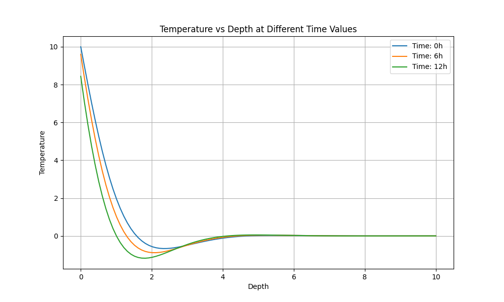

Animation Code Snippets
import numpy as np
import matplotlib
import matplotlib.pyplot as plt
from matplotlib import animation
def temperature(depth, time, parameters):
# parameters = (initial_temperature, temperature_amplitude, angular_wavenumber, angular_frequency)
return parameters[0] + \
parameters[1] * np.exp(-parameters[2]*depth) * \
np.cos(parameters[3]*time - parameters[2]*depth)
def update_figure(frame):
# update the plot curve y-data for each frame
plot_curve.set_ydata(temperatures[frame])
return plot_curve
if __name__ == '__main__':
# Choose backend software for graphing
matplotlib.use('TkAgg')
# Simulation parameters
thermal_diffusivity = 1.e-6 # meters-square per second
oscillation_period = 24 * 60 * 60 # seconds (in one day)
number_of_oscillations = 50
mean_surface_temperature = 10 # degrees Celsius
temperature_amplitude = 10 # degrees Celsius
depth_sample_number = 501
number_of_animation_frames = 40
frame_delay_time = 60 # milliseconds
# Calculated parameters
angular_frequency = 2*np.pi / oscillation_period
time_step = oscillation_period / 24
maximum_time = number_of_oscillations*oscillation_period
angular_wavenumber = np.sqrt(angular_frequency/(2*thermal_diffusivity))
maximum_depth = -np.log(0.002)/angular_wavenumber
# Time, depth, and temperature arrays
times = np.linspace(0, maximum_time, depth_sample_number)
depths = np.linspace(0, maximum_depth, depth_sample_number)
temperatures = []
temperature_parameters = (mean_surface_temperature, temperature_amplitude,
angular_wavenumber, angular_frequency)
for time in times:
temperatures.append(temperature(depths, time, temperature_parameters))
temperatures = np.array(temperatures)
# Set up figure and axes for animation
figure, axes = plt.subplots()
# Plot initial values of T(z)
curve_label = '$T_0 = $' + f'{mean_surface_temperature:.0f} °C' + ', ' + \
'$A = $' + f'{temperature_amplitude:.0f} °C'
plot_curve = axes.plot(depths, temperatures[0], label=curve_label)[0]
# Draw horizontal dashed lines at the expected limits
plt.axhline(y=mean_surface_temperature+temperature_amplitude, color='k', linestyle='--')
plt.axhline(y=mean_surface_temperature-temperature_amplitude, color='k', linestyle='--')
# Label horizontal dashed lines
plt.text(depths[0], mean_surface_temperature+1.05*temperature_amplitude, ' $T_0+A$',
horizontalalignment='left', verticalalignment='bottom')
plt.text(depths[0], mean_surface_temperature-1.05*temperature_amplitude, ' $T_0-A$',
horizontalalignment='left', verticalalignment='top')
# Set the axes limits to the range of depths and temperatures with some room (1.5 A) above and below
# Label axes
axes.set(xlim=[0, maximum_depth],
ylim=[mean_surface_temperature-1.5*temperature_amplitude,
mean_surface_temperature+1.5*temperature_amplitude],
xlabel='Depth [m]', ylabel='Temperature [°C]')
# Display legend
axes.legend()
# Create animation
animation_result = animation.FuncAnimation(fig=figure, func=update_figure,
frames=number_of_animation_frames,
interval=frame_delay_time)
plt.show()
Plots

Animated GIF